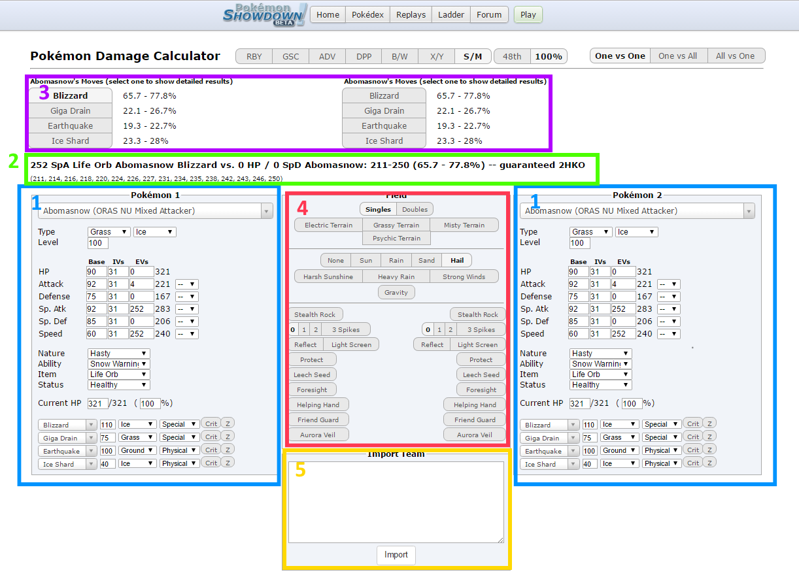
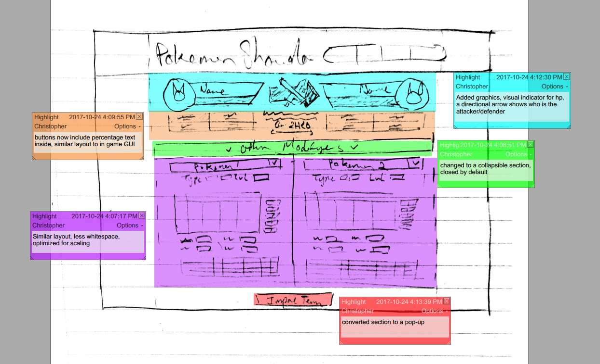
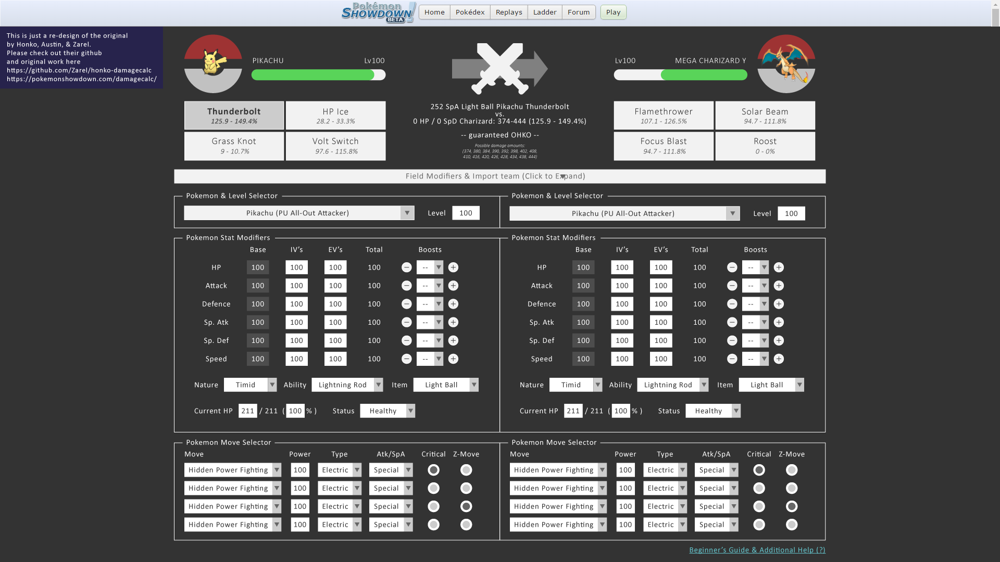
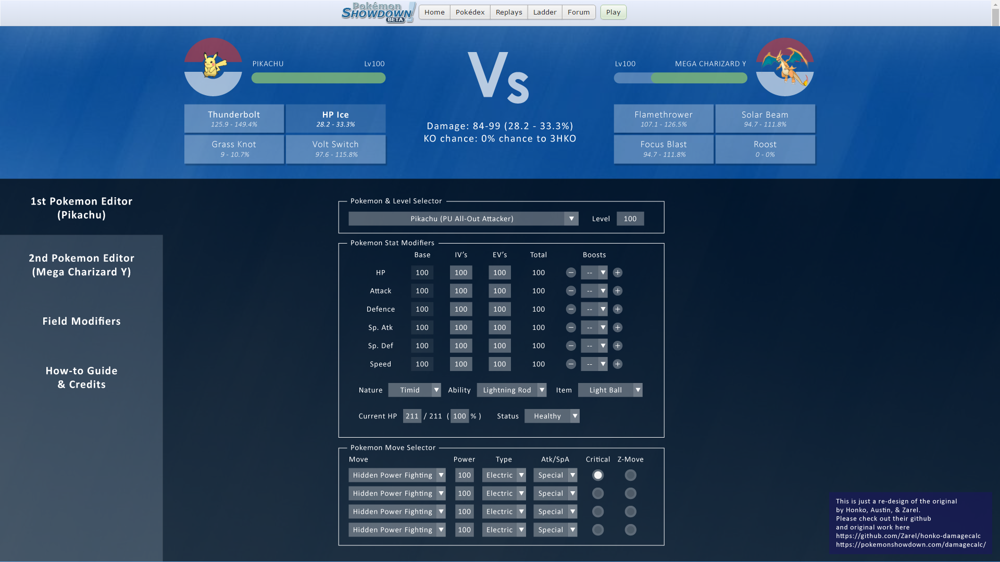
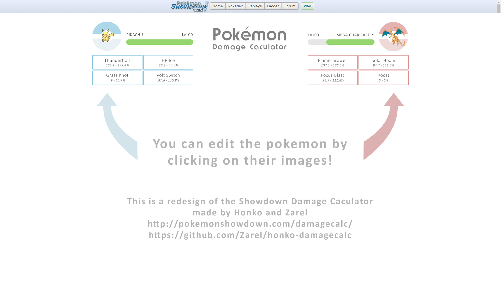
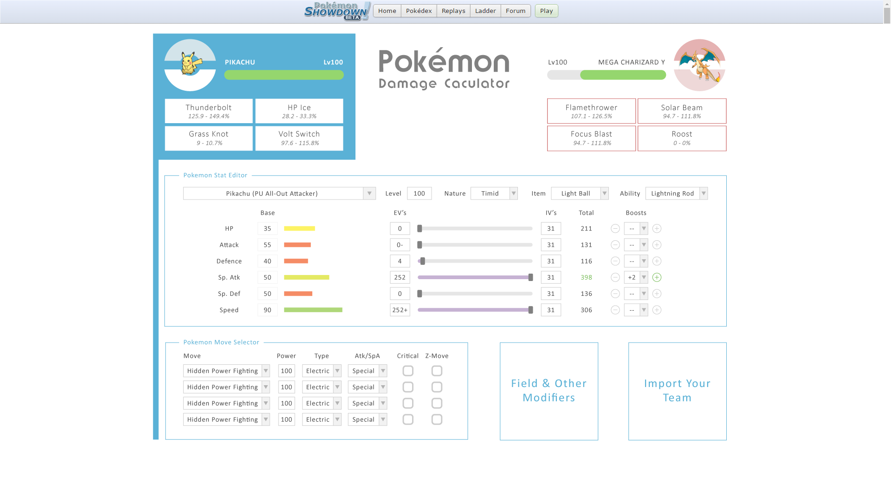
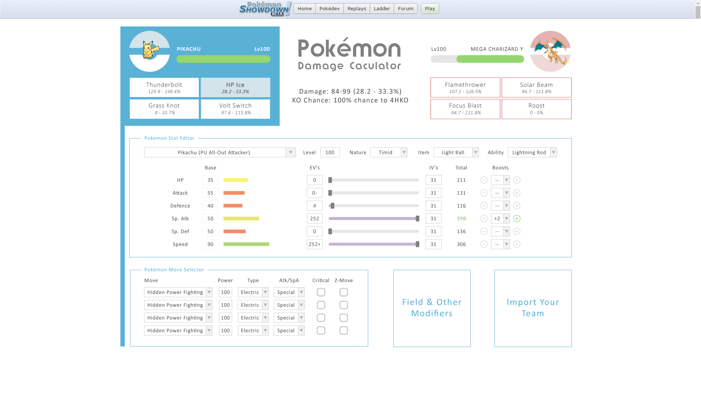

Pokémon Showdown Damage Calculator
Taking a look at the failures of the original design:

Legend (in order of importance)
The two glaring issues is that this site does not support devices with smaller screens as all the elements are fixed sizes and not relative to the viewport.
If we look at the site as someone who has never used it before, the application is quite overwhelming as there is no obvious instructions or focal points. As listed in the legend, the Field Modifier is rarely touched but is placed at the center of the screen drawing unnecessary attention.
In the Pokémon selector, all the fields are equally sized and this causes the misconception that they are of equal importance. Some fields are rarely edited (ex. The left most column BASE is automatically filled for you and should be avoided for most instances). For some reason the right most column is missing a label entirely and the incremental buttons are comically small in the EVs section.
The Main display is bolded but otherwise hard to notice since it is sandwiched between two input sections. It should be noted that we should keep the text formatting since it was designed to be easily copy & pasted out of the calculator to share.
The Move selector has a description on how you should use it, but it’s text is small and doesn’t tell the user it’s association with the Main display. Also, the moves from the Pokémon selector correlate with the selector however the elements don’t line up vertically.
The site is also completely abstract to a new user as there are no clear steps to how you should interact with the calculator.


With the rough sketch I crafted my very first draft in Illustrator. Apart from the new GUI, most of the input sections are very similar. However, by hiding the Field & Import sections it reduced clutter and allowed more liberal use of white space.
I tried the concept of a dark theme and later decided against it since it’s more of a personal preference rather than an improvement over the original.
I think in general this design is a lot more approachable, but is still quite intimidating. I felt that there was still a lack of good visual hierarchy.

This is the second draft that mainly changes the colour theme. I tried to reduce clutter by separating the two Pokémon edit sections on different screens. I really liked the concept but to take advantage of the new white space I had to go back to the drawing board.
This time around there is also a clear divide between the GUI and the edit sections that draws attention to the display.
Like I mentioned though, this was more of an thematic experiment rather than any design changes.

This is my final draft (High Fidelity Prototype) of my proposed changes. It starts with a landing page that gives clear instructions on how to start using the tool. By introducing visual elements through interaction, I believe that this helps the users to intuitively use the site.

I kept the same concept of separating the two Pokémon edit sections and used the new-found space to free up the elements with lots of white space. I think this keeps the tool approachable with several visual indicators to help guide users as to what is going on.
For people who have used the teambuilder on Pokémon Showdown, they will see that I borrowed the Ev, Iv, and Base Stat designs.
I decided to use the classic Blue vs Red idea and theme everything respectively depending on which Pokémon is selected.

Upon selecting a move more information will display under the logo as well as updating the health bar of the appropriate Pokémon.
A final note regarding the theme. I was inspirited by the minimalist and pastel colours of the pikalytics tool made by @pikalytics on twitter.